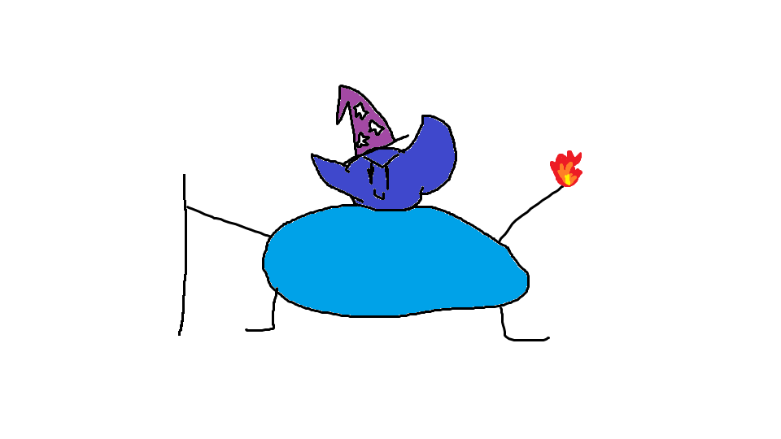

About
Grow foods is an innovative new farming game utilizing new technology like the C programming language as well as CLI graphics. In Grow Foods you play the farmer and disgraced ruler Johnthaniel whose goal is to establish a farm on land corrupted by his use of the Omega Magic. Will Johnthaniel be able to overcome the mistakes of his past and restore his kingdom to its former glory or will he fall victim to the corrupting powers of the Omega Magic. Who knows? Not me I haven't finished the game yet.
Music
For this game I decided to go with the music created by the famous singer Will Smith. More specifically I thought I would use his work on the hit film Wild Wild West as it most fits this game in both a story and artistic sense. Wild Wild West is so fitting because after the Omega Magic corrupted Johnthanial he became evil and turned the lands he once ruled with a kind heart into the Wild Wild West. Also Wild Wild West much like Will Smith SLAPS. Please note that Will Smith has not yet aggreed to work on this project.
Wild Wild West by Will Smith:
Why This Game is so Cool
Using scientific data that was collected and displayed in the below table prooves that this game is objectivley cool.
| Game | Art Style | Gameplay | Rating |
|---|---|---|---|
| Grow Foods | Super cool text graphics | High octane turn based farming action | 10/10 |
| Mario | Red and blue | Just running and jumping | 0/10 |
| Sonic | Red and blue | The same as Mario | 0/10 |